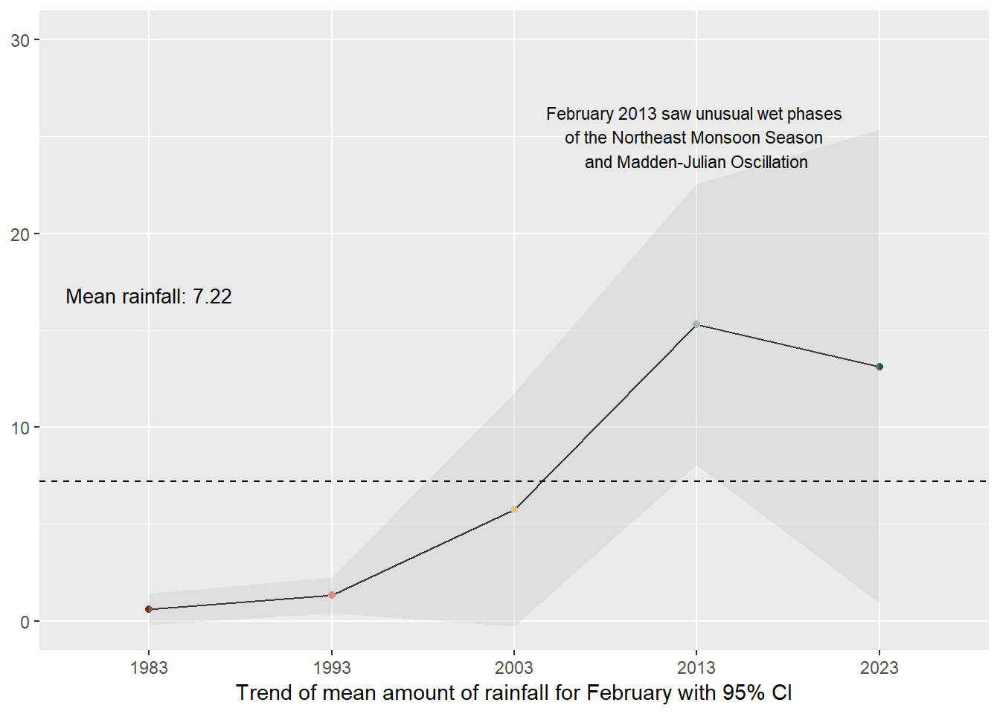
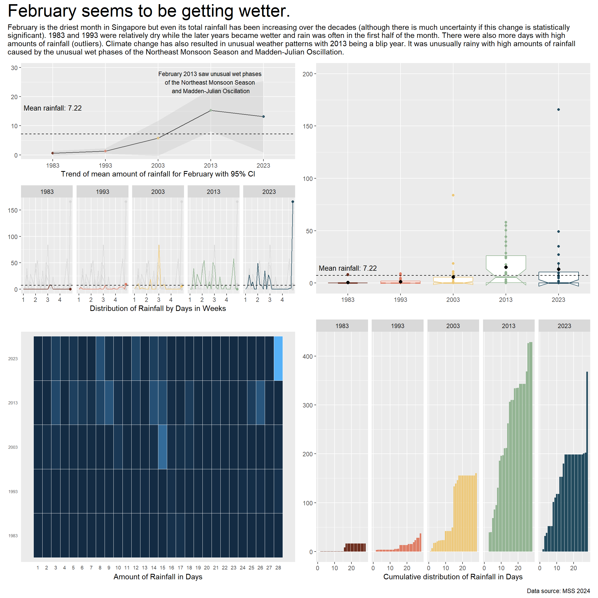

flowchart TB A[Temperature] B[Rainfall] C[Climate Change] D[Increase in daily mean] E[More warm days and nights] F[Increase in annual total] G[More pronounced contrast between wet and dry months ] H[Increase intensity and frequency of heavy rainfall] C --> A C --> B A --> D A --> E B --> F B --> G B --> H
Take-home Exercise 3: Be Weatherwise or Otherwise

1 Setting the scene
According to the official Climate Change in Singapore report as shown in the infographic above,
Daily mean temperature are projected to increase by 1.4 to 4.6,
there will be more warm days and warm nights from February to September,
Annual total rainfall rose at an average rate of 101mm per decade,
The contrast between the wet months (November to January) and dry month (February and June to September) is likely to be more pronounced, and
Intensity and frequency of heavy rainfall events is expected to increase.
1.1 The Task
In this take-home exercise, you are required to:
Select a weather station and download historical daily temperature or rainfall data from Meteorological Service Singapore website,
Select either daily temperature or rainfall records of a month of the year 1983, 1993, 2003, 2013 and 2023 and create an analytics-driven data visualisation,
Apply appropriate interactive techniques to enhance the user experience in data discovery and/or visual story-telling.
2 Getting started
2.1 Selection of Task
We are tasked to select 1) rainfall or temperature, 2) for one specific month, 3) at one specific weather station.
2.1.1 Selection of Rainfall
My son expressed much interest in this assignment and decided the study of rainfall would be the most interesting. He was most excited as he thought I had to manually measure rainfall with a rain gauge. While disappointed by the truth, he revived when I printed out the data tables.
Thus, the claim being scrutinised in this study is:
- Climate change has caused annual total rainfall to rise at an average rate of 101mm per decade.
The claims not studied are:
Climate change has caused more pronounced contrast between the wet and dry months.
- because the task has specified only studying one month and thus comparisons between months is not possible.
Climate change has caused an increase in intensity and frequency of heavy rainfall events.
- because MacRitchie Reservoir’s (and other stations’) data for 30-min, 60-min and 120-min rainfall were only recently recorded and did not extend back to 1983 which is one of the criteria of the task.
2.1.2 Selection of February
For the selection of the month, as we enter February in 2024, TodayOnline (1 February 2024) reported that we will be facing dry weather with less rain. We can see from the table below that between 1991 and 2020, February was the driest month with the least number of mean raindays. I selected February as I thought focusing on the driest month will give us the most pronounced contrast in the increase in rainfall due to climate change.
Note
A day is considered to have “rained” if the total rainfall for that day is 0.2mm or more (read more at Climate of Singapore).

In the table on the right, February sees a huge variance between the highest and lowest monthly rainfall and this can question the claim that climate change has caused rainfall to increase annually.
However, MSS (1 March 2023) reported that 2023 also saw the wettest day on record for February - “225.5mm recorded at Kallang… [and] was the highest daily total rainfall ever recorded in February, exceeding the previous record of 159.3mm on 4 February 1995”. Rainfall anomaly saw that well above average rainfall happened in February 2023 as seen in the image below.
Thus, there seems to be interesting patterns occurring in February and thus, it was selected as part of the study.
2.1.3 Selection of MacRitchie Reservoir station
Given the criteria that we need to collect rainfall data from 1983 to 2023, only 19 weather stations met the criteria (you can refer to the link here). While Changi is the official reference station of NEA, MacRitchie Reservoir station was of most interest to me as it is relatively located in the central area of Singapore (as seen in the image below) and is in the second wettest area in Singapore. It is of 1.3417 Lat.(N), 103.8338 Long.(E) and 25m elevation above mean sea-level (you can read more here). MacRitchie Reservoir is also the first water supply system in Singapore as part of the Central Catchment Nature Reserve and its water levels are often mentioned in the news during dry spells.
However, as seen in the image on the right, MacRitchie Reservoir station does experience rainfall anomaly e.g. in February 2022, it was one of the driest stations with it experiencing only 1% above average rainfall in February.
Thus, the variance in MacRitchie Reservoir’s rainfall pattern over the years is also interesting and thus, may yield interesting insights.
2.2 Questions raised
To validate the claims raised in 2.1.1 Selection of Rainfall, there are some questions raised at different levels to study rainfall trends in Singapore.
2.2.1 Questions about the data
Number of days it rained? Total? Mean? Median? Maximum? Minimum?
Volume of total rainfall? Total? Mean? Median? Maximum? Minimum?
How do these figures compare to the average rainfall for February (1991 - 2020) as reported by MSS?
When does it usually rain in February? Day? Week?
Weekly? Monthly? Yearly? patterns
Since this is sample data, how can I be certain about my conclusions?
2.2.2 Questions about the visualisation of data
How to present the trends in number of days and volume of rainfall
How to present the yearly/monthly trends of rainfall
How to gain a deeper insight on the differences between years and days of rainfall
How to quickly spot patterns in the data across years and days
How to visualise statistical uncertainty for sample data
2.3 Data
2.3.1 Installing and loading the required libraries
The code chunk below uses p_load() of pacman package to check if the necessary packages are installed in the computer. If they are, then they will be launched into R.
crosstalk, for implementing cross-widget interactions (currently, linked brushing and filtering), and
DT, for providing an R interface to the JavaScript library DataTables that create interactive table on html page
FunnelPlotR, for creating funnel plot.
gganimate, an ggplot extension for creating animated statistical graphs
ggdist, for visualising distribution and uncertainty
ggridges, a ggplot2 extension specially designed for plotting ridgeline plots
ggthemes, an R package that provides some extra themes, geoms, and scales for ‘ggplot2’
ggsignif, a ggplot extension that provides a single layer
geom_signifwhich can calculate the significance of a difference between groups and add the annotation to the plot in a single lineggstatsplot, an extension of ggplot2 package for creating graphics with details from statistical tests included in the information-rich plots themselves
gifski converts video frames to GIF animations using pngquant’s fancy features for efficient cross-frame palettes and temporal dithering. It produces animated GIFs that use thousands of colors per frame
MetBrewer, colour palettes inspired by works at the Metropolitan Museum of Art in New York
kableExtra, for creating and manipulating complex tables
patchwork, for combining multiple ggplot2 graphs into one figure
plotly, R library for plotting interactive statistical graphs
readr, for importing csv into R
tidyverse, a family of modern R packages specially designed to support data science, analysis and communication task including creating static statistical graphs
transformr, to smoothly animate the transformation of polygons and paths
code block
pacman::p_load(crosstalk, DT,
FunnelPlotR, gganimate,
ggdist, ggridges,
ggthemes, ggsignif,
ggstatsplot,
gifski, kableExtra,
MetBrewer, patchwork,
plotly, tidyverse,
transformr
) 2.3.2 Data Set
Historical daily records of rainfall from MacRitchie Reservoir on February 1983, 1993, 2003, 2013 and 2023 were extracted from the Historical Daily Records page of the Meteorological Service Singapore. 5 different .CSV files were extracted, cleaned and combined to form the dataset rainfall_1983_2023.
2.3.2.1 Creating the data set
This code chunk below reads all the .csv files, cleans them by removing irrelevant columns e.g. Station, Month etc. and saves them as cleaned .csv files .
code block
library(tidyverse)
library(stringr)
#get all the .csvs present in the directory and then create new files by appending '_cleaned' before .csv
paths <- list.files(path = "data/", full.names = TRUE) %>%
str_subset(pattern = '.csv$') #capture all the files ending in .csv
paths_cleaned <- str_replace(paths, '.csv$', '_cleaned.csv')
get_csv <- function(path, path_clean){
# read uncleaned, raw, data
uncleaned_data <- read.csv(path, fileEncoding = "Latin1", check.names = F)
# extract the useful columns
cleaned_data <- uncleaned_data[-c(1,3,6:13)]
# write the new cleaned data into a new file name (adding "_cleaned" in the end)
write.table(cleaned_data,
path_clean,
row.names = FALSE,
col.names = TRUE,
sep = ",")
}
map2(paths, paths_cleaned, ~get_csv(.x, .y))This code chunk combines all the cleaned .csv files and creates a new combined_rainfall.csv
code block
library(dplyr)
# Get a list of all .csv files in the "data/" directory
paths <- list.files(path = "data", full.names = TRUE) %>%
str_subset(pattern = '_cleaned.csv$')
# Initialize an empty data frame to store the combined data
combined_data <- data.frame()
# Loop through each .csv file and combine them
for (path in paths) {
# Read each .csv file
current_data <- read.csv(path, fileEncoding = "Latin1", check.names = FALSE)
# Combine the data
combined_data <- bind_rows(combined_data, current_data)
}
# Specify the full path for the output file in the "data" directory
output_path <- "data/combined_rainfall.csv"
# Write the combined data into the specified .csv file
write.csv(combined_data, output_path, row.names = FALSE)2.3.3 Importing Data
In the code chunk below, read_csv() of readr is used to import combined_rainfall.csv into R and parsed it into tibble R data.frame format.
code block
rainfall <- read_csv("data/combined_rainfall.csv") 2.3.4 Summary Statistics of combined_rainfall.csv
Displaying the first 5 rows of rainfall using head():
code block
head(rainfall,5) %>%
kbl() %>%
kable_classic_2(full_width = F)| Year | Day | Daily Rainfall Total (mm) |
|---|---|---|
| 1983 | 1 | 0.0 |
| 1983 | 2 | 0.3 |
| 1983 | 3 | 0.0 |
| 1983 | 4 | 0.0 |
| 1983 | 5 | 0.0 |
Checking the structure of rainfall using glimpse():
Structure of rainfall
There are 140 rows and 3 columns (Year, Day, Daily Rainfall Total).
Of note, Year and Day have been wrongly labelled as <dbl> when they should be cast as <factor> as they is categorical in nature (for the purpose of this study).
code block
glimpse(rainfall)Rows: 140
Columns: 3
$ Year <dbl> 1983, 1983, 1983, 1983, 1983, 1983, 1983, …
$ Day <dbl> 1, 2, 3, 4, 5, 6, 7, 8, 9, 10, 11, 12, 13,…
$ `Daily Rainfall Total (mm)` <dbl> 0.0, 0.3, 0.0, 0.0, 0.0, 0.0, 0.0, 0.0, 0.…Checking for any symptoms of messy data:
Symptoms of messy data in rainfall
- No duplicated rows
- No missing values
1. Checking for duplicates:
code block
rainfall[duplicated(rainfall),]# A tibble: 0 × 3
# ℹ 3 variables: Year <dbl>, Day <dbl>, Daily Rainfall Total (mm) <dbl>2. Checking missing values:
code block
sum(is.na(rainfall))[1] 02.3.5 Altering combined_rainfall.csv
Data wrangling and manipulation:
The title of Daily Rainfall Total (mm) is hard to code with. It was renamed using
dplyr::rename()function to amt_rainfall.New variable Week and rainyday_indicator are created using
mutate()(see 2.2.1 Questions about the data)Year, Day, Week and rainyday_indicator are classified as
<chr>, but are categorical in nature. This is cast as factor type usingas.factor().
code block
# Renaming variables
rainfall <- rainfall %>%
rename("amt_rainfall" = "Daily Rainfall Total (mm)"
)code block
# Renaming variables
rainfall <- rainfall %>%
mutate(Week = ceiling(Day / 7),
rainyday_indicator = ifelse(amt_rainfall != 0, 1, 0))code block
# Casting ordinal as factor
rainfall$Year <- as.factor(rainfall$Year)
#rainfall$Day <- as.factor(rainfall$Day)
rainfall$Week <- as.factor(rainfall$Week)
#rainfall$rainyday_indicator <- as.factor(rainfall$rainyday_indicator)3 Design of Data Visualisations
Based on the above questions raised in 2.2 Questions raised, it is good practice to break down the tasks the data visualisations will achieve.
3.1 Hypothesis
To study the hypothesis: Climate change has caused annual total rainfall to rise at an average rate of 101mm per decade
- Null hypothesis: Climate change has not caused annual total rainfall to rise per decade.
3.2 Task Analysis
3.2.1 User Stories
As a casual user, I want to see interesting facts of rainfall at a glance.
As a casual user, I want to see a snapshot of the rainfall trends e.g. is it increasing, if in line with mean amount of rainfall or an anomaly.
As an expert user, I want to select a particular day on a yearly chart, so that I can study the weather situation of a selected day.
As an expert user, I want to see all the changes in rainfall patterns, so that I can see how much rainfall is changing by decade.
As an expert user, I want to see the distribution of the data and if there are any outliers.
3.2.2 Breakdown of tasks
Present the highest amount of rainfall and year with the highest number of rainy days.
Present the yearly and daily trends of rainfall.
Present the yearly and daily distribution of volume of rainfall.
Discover days of interest. The user can interact with each day to obtain details on demand.
Identify how much variation is occurring yearly.
Identify patterns in the rainfall data.
Present how much uncertainty is behind the data visualisations.
3.2 Plots
3.2.1 To present interesting facts of rainfall at a glance
Aims
- To present the highest amount of rainfall and year with the highest number of rainy days.
This will be provided in the form of cards in the dashboard:
A card about the highest amount of rainfall and which day and year it was
The year with the highest number of rainy days
3.2.2 To visually present the distribution of rainfall over time and allow users to explore
Aims
- To present the data in an animated fashion to show changes in rainfall data through time
- To present the yearly and daily distribution of volume of rainfall.
- To allow users to discover days of interest. The user can interact with each day to obtain details on demand.
A bubble plot was selected as it is visually engaging and can communicate about changes of rainfall over time at a very granular level. Following in the footsteps of Chua (2019), who visualised Singapore’s changing weather patterns from 1983–2019, I chose to reverse the y-axis to simulate the look of falling rain. Unlike his static plot, I wanted to show the changes through the years and chose to animate the plots. The size and colour of the bubbles also reflected the amount of rainfall for that day.
code block
rainyfall <- rainfall %>%
mutate(Year = as.integer(as.character(Year)))
ggplot(rainyfall, aes(x = Day, y = amt_rainfall,
size = amt_rainfall,
colour = amt_rainfall)) +
geom_point(alpha = 0.7,
show.legend = FALSE) +
scale_size(range = c(2, 12)) +
labs(title = 'Years: 1993 - 2023',
x = 'Days of February',
y = NULL) +
transition_time(Year) +
ease_aes('linear') +
scale_y_reverse(limits = c(200, 0)) +
scale_x_continuous(breaks = 1:28) +
theme(legend.position = 'none',
panel.grid.major = element_blank(),
panel.grid.minor = element_blank(),
axis.text.y = element_blank(),
axis.ticks.y = element_blank()) code block
library(ggplot2)
library(plotly)
library(gganimate)
rainyfall <- rainfall %>%
mutate(Year = as.integer(as.character(Year)))
gg <- ggplot(rainyfall,
aes(x = Day,
y = amt_rainfall,
size = amt_rainfall,
colour = amt_rainfall,
text = paste("Year:", Year, "Day:", Day, "<br>", "Amount of rainfall:", amt_rainfall))) +
geom_point(aes(size = amt_rainfall,
frame = Year),
alpha = 0.7,
show.legend = FALSE) +
geom_hline(data = rainfall %>%
summarize(mean_value = mean(amt_rainfall)),
aes(yintercept = mean_value),
color = "black", linetype = "dashed") +
scale_size(range = c(2, 10)) +
labs(x = "Days of February",
y = NULL) +
theme_gray() +
theme(legend.position = 'none',
panel.grid.major = element_blank(),
panel.grid.minor = element_blank(),
axis.text.y = element_blank(),
axis.ticks.y = element_blank()) +
scale_y_reverse(limits = c(200, 0)) +
scale_x_continuous(breaks = 1:28)
# Convert ggplot to plotly
ggplotly(gg, tooltip = c("text")) %>%
animation_opts(frame = 1500, redraw = FALSE, easing = "linear")As can be seen in the two plots above, the chart on the left is animated and on autoplay. It provides a quick look at how the amount of rainfall and number of rainy days have increased. However, it is limited as the user cannot interact with the plot and explore any days of interest. The chart on the right is both animated and interactive - the user can see the changes through time and also explore any bubbles of interest. Yet, it is not on autoplay but this feature is not so important if interactivity is an aim of this visualisation.
To further enhance interactivity, an interactive datatable using DT() was added and linked to the interactive bubble plot using crosstalk(). This allows the user to explore the data at the
code block
rainyfall <- rainfall %>%
mutate(Year = as.integer(as.character(Year)))
rain_data <- highlight_key(rainyfall)
rain_p <- ggplot(rain_data,
aes(x = Day,
y = amt_rainfall,
size = amt_rainfall,
colour = amt_rainfall,
text = paste("Year:", Year, "Day:", Day, "<br>", "Amount of rainfall:", amt_rainfall))) +
geom_point(aes(size = amt_rainfall,
frame = Year),
alpha = 0.7,
show.legend = FALSE) +
geom_hline(data = rainfall %>%
summarize(mean_value = mean(amt_rainfall)),
aes(yintercept = mean_value),
color = "black", linetype = "dashed") +
scale_size(range = c(2, 10)) +
labs(x = "Days of February",
y = NULL) +
theme_gray() +
theme(legend.position = 'none',
panel.grid.major = element_blank(),
panel.grid.minor = element_blank(),
axis.text.y = element_blank(),
axis.ticks.y = element_blank()) +
scale_y_reverse(limits = c(200, 0)) +
scale_x_continuous(breaks = 1:28)
rain_highlight <- highlight(ggplotly(rain_p,, tooltip = c("text")) %>%
animation_opts(frame = 1500, redraw = FALSE, easing = "linear"),
on = "plotly_selected",
off = "plotly_doubleclick")
interactive <- crosstalk::bscols(rain_highlight,
DT::datatable(rain_data, options = list(pageLength = 5)),
widths = c(11, 11))
interactiveHowever, while pretty, bubble plots are limited in offering a clear snapshot of trends as bubble plots rely on spatial positioning (although I think the inverse y-axis to simulate this helps alleviate this issue). Yet, the data is too granular at this level and the data set is too small.
3.2.3 To present a snapshot of patterns and trends from a higher level
Aims
- To move away from granular data
- To present clear trends in the daily and yearly data
- To identify patterns in the rainfall data
- To present how much uncertainty is behind the data visualisations.
3.2.3.1 For daily trends
To study the daily trends of the amount of rainfall, a calendar heatmap was selected to reveal temporal patterns in data. At a quick glance, we can compare rainfall patterns across the year intervals simultaneously and how the conditions change through time through the intensity of the colours reflecting the varying amounts of rainfall.
code block
library(MetBrewer)
rainfall$Year <- as.factor(rainfall$Year)
p <-ggplot(rainfall,aes(Day, Year, fill=amt_rainfall))+
geom_tile(color= "white",size=0.1) +
labs(title = NULL,
x = "Amount of Rainfall in Days",
y = NULL,
fill = "Amount of rainfall") +
theme_gray()
heatmap <-p + theme(legend.position = "none")+
theme(plot.title=element_text(size = 14))+
theme(axis.text.y=element_text(size=6)) +
theme(strip.background = element_rect(colour="white"))+
theme(plot.title=element_text(hjust=0))+
theme(axis.ticks=element_blank())+
theme(axis.text=element_text(size=7))+
theme(legend.title=element_text(size=8))+
theme(legend.text=element_text(size=6))+
scale_x_continuous(breaks = unique(rainfall$Day), labels = unique(rainfall$Day))
ggplotly(heatmap)As seen in the above plot, heatmaps are excellent in visualising large temporal data by showing clear trends over time - we can see that there is more rainfall and rainy days from 2003 onwards. Moreover, the interactivity allows the user to hover over specific tiles for specific information.
However, while heatmaps are visually nice and informative, Bock pointed out that the shading in heatmaps are often problematic - “we are poor at comparing shading in non-adjacent regions of a visualisation… [also known as the] checker shadow illusion”. Thus, it is easy for us to mis-gauge the difference in amount of rainfall as seen on the image on the right where the gradient difference between days of 15 (44.2mm) and 18 (23.8mm) for 2013 is not easy to pick up.
The use of a cumulative histogram together with the heatmap will show the clear distribution of individual rainfall points and provide a clear representation of the cumulative amount of rainfall for each day.
code block
library(MetBrewer)
# Convert amt_rainfall to numeric
rainfall$amt_rainfall <- as.numeric(as.character(rainfall$amt_rainfall))
# Create a cumulative histogram by day and facet by year
rainfall_cumulative <- rainfall %>%
group_by(Year) %>%
arrange(Day) %>%
mutate(cumulative_count = cumsum(amt_rainfall))
# Plot the cumulative histogram with a line tracing the tops of the bars
ch_rainfall <- ggplot(rainfall_cumulative, aes(x = Day, y = cumulative_count, group = Year, fill = Year, text = paste("Year:", Year, "Day:", Day, "<br>", "Cumulative amount of rainfall:", cumulative_count))) +
geom_bar(stat = "identity") +
facet_grid(. ~Year , scales = "free_y", switch = "y") +
labs(title = NULL,
x = "Cumulative distribution of Rainfall in Days",
y = NULL) +
theme_gray() +
scale_fill_manual(values = met.brewer("Hokusai1", 5)) +
theme(legend.position = "none")
# Convert ggplot to plotly
cumulative <- ggplotly(ch_rainfall, tooltip = c("text"))
cumulativeThe cumulative histogram clearly shows the change in total amount of rainfall in each decade and also shows any outlier days of heavy rain. It also can show trends such that in the later decades, the rain often fell in the first half of the month. Unfortunately, I am not able to build a linking view with subplot() and this might be because of the facet_grid(). It would be cool if I could link the heatmap and cumulative histograms together so we can track the colour changes in the heatmap with the changes in cumulative values in the cumulative histogram.
3.2.3.2 For weekly trends
To improve this issue, I chose animated line charts with a reference line of mean rainfall (1991 - 2020) so that the user can supplement their use of the bubble plot with a clearer idea on whether rainfall has increased or decreased in reference to each year and week being studied and the mean line. As argued by Uberti, “For most people, it’s considerably easier to understand an upward or downward line than relative spatial positioning”.
code block
library(gganimate)
library(MetBrewer)
library(transformr)
library(gifski)
rainfall$Weeks <- cut(rainfall$Day, breaks = seq(1, max(rainfall$Day) + 7, by = 7), labels = FALSE)
rainfall$Weeks_Labels <- cut(rainfall$Day, breaks = seq(1, max(rainfall$Day) + 7, by = 7), labels = FALSE, right = FALSE)
# Now, create the plot
p <- ggplot(
rainfall,
aes(x = Day, y = amt_rainfall, color = factor(Year))
) +
geom_line() +
scale_color_manual(name = "Hokusai1", values = met.brewer("Hokusai1", 5)) +
geom_hline(data = rainfall %>%
summarize(mean_value = mean(amt_rainfall)),
aes(yintercept = mean_value),
color = "black", linetype = "dashed") +
labs(x = "Weeks of February", y = NULL) +
theme_minimal() +
scale_x_continuous(breaks = unique(rainfall$Day[seq(1, length(unique(rainfall$Day)), by = 7)]),
labels = unique(rainfall$Weeks_Labels))
p + transition_reveal(Day)code block
library(tidyverse)
library(janitor)
library(showtext)
library(MetBrewer)
library(scico)
library(ggtext)
library(patchwork)
library(gghighlight)
rainfall$Weeks <- cut(rainfall$Day, breaks = seq(1, max(rainfall$Day) + 7, by = 7), labels = FALSE)
rainfall$Weeks_Labels <- cut(rainfall$Day, breaks = seq(1, max(rainfall$Day) + 7, by = 7), labels = FALSE, right = FALSE)
p1 <- rainfall %>%
ggplot() +
geom_point(data=rainfall %>%
group_by(Year) %>%
slice_max(Day),
aes(x=Day, y=amt_rainfall, color=Year),shape=16) +
geom_line(aes(x=Day, y=amt_rainfall, color=Year)) +
geom_hline(data = rainfall %>%
summarize(mean_value = mean(amt_rainfall)),
aes(yintercept = mean_value),
color = "black", linetype = "dashed") +
gghighlight(use_direct_label = FALSE,
unhighlighted_params = list(colour = alpha("grey85", 1))) +
geom_text(data=rainfall %>%
group_by(Year) %>%
slice_max(Day),
aes(x=Day, y=amt_rainfall, color=Year, label = round(amt_rainfall)),
hjust = -.5, vjust = .5, size=2.5, fontface="bold") +
scale_color_met_d(name="Hokusai1") +
scale_x_continuous(breaks = unique(rainfall$Day[seq(1, length(unique(rainfall$Day)), by = 7)]),
labels = unique(rainfall$Weeks_Labels)) +
facet_grid(~ factor(Year, levels=c('1983','1993','2003','2013', '2023'))) +
coord_cartesian(clip = "off") +
theme_gray() +
coord_cartesian(xlim = c(1, 28)) +
theme(legend.position = "none") +
labs(title = NULL,
x = "Distribution of Rainfall by Days in Weeks",
y = NULL)
small_lines <- p1 + transition_reveal(Day)
small_linesAs seen in the above plots, animated line charts paint a different picture at the granular level. We can see the trend of increasing rain in the latter years and the increasing variability. For the chart on the left, it looked messy and confusing as the lines are superimposed on each other. The animated lines distracted, rather than clarified. On the right, the chart was split into small multiples - according to Vallandingham (2014), “the key idea is to slice up your data and use a separate plot to visualize each slice… small multiples can help with overplotting — when data is obscured or occluded because there are too many plotted items” (which is what we are facing). This improved visibility and readability and provided a snapshot of trends at a granular level.
3.2.3.3 For yearly trends
To study the yearly trends of the amount of rainfall, line charts were used.
code block
library(MetBrewer)
rainfall$Year <- as.factor(rainfall$Year)
mean_rainfall_per_year <- rainfall %>%
group_by(Year) %>%
summarise(Mean_Rainfall = mean(amt_rainfall, na.rm = TRUE))
# Create a time series plot with mean rainfall
gg2 <- ggplot(mean_rainfall_per_year, aes(x = Year, y = Mean_Rainfall, group = 1)) +
geom_hline(data = rainfall %>%
summarize(mean_value = mean(amt_rainfall)),
aes(yintercept = mean_value),
color = "black", linetype = "dashed") +
geom_line() +
geom_point(aes(color = Year), size = 1.5) +
labs(title = "Mean Amount of Rainfall per Year in February",
x = NULL,
y = NULL) +
theme_minimal() +
coord_cartesian(ylim = c(0, 30)) +
annotate("text", x = "2013", y = 25, size = 3, label = "February 2013 saw unusual wet phases \nof the Northeast Monsoon Season \nand Madden-Julian Oscillation") +
annotate("text", x = 1, y = mean(rainfall$amt_rainfall) + 1,
label = sprintf("Mean rainfall: %.2f", mean(rainfall$amt_rainfall)),
color = "black", size = 3.5, vjust = 1) +
theme_gray() +
scale_color_met_d(name="Hokusai1") +
theme(legend.position = "none")
ggplotly(gg2)code block
library(MetBrewer)
rainfall$Year <- as.factor(rainfall$Year)
rainfall_sum <- rainfall %>%
group_by(Year) %>%
summarise(
n=n(),
mean=mean(amt_rainfall),
sd=sd(amt_rainfall)
) %>%
mutate(se=sd/sqrt(n-1))
gg <- ggplot(rainfall_sum, aes(x = Year, y = mean, group = 1)) +
geom_line() +
geom_point(aes(x=Year,
y=mean, color = Year, text = paste("Year:", `Year`,
"<br>N:", `n`,
"<br>Mean amount of rainfall:", round(mean, digits = 2),
"<br>95% CI:[",
round((mean-1.96*se), digits = 2), ",",
round((mean+1.96*se), digits = 2),"]")), stat="identity") +
geom_ribbon(
aes(ymin = mean - 1.96 * se, ymax = mean + 1.96 * se),
fill = "gray",
alpha = 0.3
) +
geom_hline(data = rainfall %>%
summarize(mean_value = mean(amt_rainfall)),
aes(yintercept = mean_value),
color = "black", linetype = "dashed") +
theme_gray() +
coord_cartesian(ylim = c(0, 30)) +
annotate("text", x = "2013", y = 25, size = 3, label = "February 2013 saw unusual wet phases \nof the Northeast Monsoon Season \nand Madden-Julian Oscillation") +
annotate("text", x = 1, y = mean(rainfall$amt_rainfall) + 1,
label = sprintf("Mean rainfall: %.2f", mean(rainfall$amt_rainfall)),
color = "black", size = 3.5, vjust = 1) +
labs(title = NULL,
x = "Trend of mean amount of rainfall for February with 95% CI",
y = NULL) +
scale_color_met_d(name="Hokusai1") +
theme(legend.position = "none")
mean_line <- ggplotly(gg, tooltip = c("text"))
mean_line As can be seen in the two plots above, a line chart quickly showed the upward trend of the mean amount of rainfall over the years with a slight blimp in 2013 due to unusual weather patterns. A reference line with the mean rainfall amount in 1991 - 2020 (given by MSS) was also present to chart how the years fared in response to the mean. Both are interactive so that the user can interact with the plots to explore what the mean amount of rainfall is for that year.
The chart on the right goes one step further to show the 95% confidence interval in order to visualise the uncertainty of the point estimate (mean of rainfall for the month of February in that year). Interestingly, in the earlier years of 1983 - 1993, the narrow interval suggests a more precise mean estimate while the wider interval in the latter years suggest greater uncertainty. Hence, we cannot be too certain that the amount of rainfall is increasing through the years.
code block
library(MetBrewer)
rainfall$Year <- as.factor(rainfall$Year)
total_rainfall_per_year <- rainfall %>%
group_by(Year) %>%
summarise(Total_Rainydays = sum(rainyday_indicator, na.rm = TRUE))
# Create a time series plot
gg <- ggplot(total_rainfall_per_year, aes(x = Year, y = Total_Rainydays, group = 1)) +
geom_line() +
geom_point(aes(color = Year), size = 1.5) +
labs(title = "Total Number of Rainy days per Year",
x = NULL,
y = NULL) +
theme_minimal() +
coord_cartesian(ylim = c(0, 30)) +
annotate("text", x = "2013", y = 25, size = 3, label = "February 2013 saw unusual wet phases \nof the Northeast Monsoon Season \nand Madden-Julian Oscillation") +
theme_gray() +
scale_color_met_d(name="Hokusai1") +
theme(legend.position = "none")
# Convert ggplot to plotly
ggplotly(gg)The number of rainy days seem to be increasing and peaked in the unusual year of 2013 but stagnated in 2023. Hence, this plot was not included as it did not seem to yield any new discovery.
3.2.2 To visualise the distribution of rainfall between years
Aims
- To present the yearly distribution of the volume of rainfall
The code chunk below shows four different ways to study the distribution.
code block
library(MetBrewer)
rainfall$Year <- as.factor(rainfall$Year)
ggplot(rainfall,
aes(x = Year,
y = amt_rainfall,
color = Year)) +
stat_halfeye(adjust = 0.5,
justification = -0.2,
.width = 0,
point_colour = NA) +
geom_boxplot(width = .20,
outlier.shape = NA,
notch = TRUE) +
stat_dots(side = "left",
justification = 1.2,
binwidth = .5,
dotsize = 1.5) +
coord_flip() +
scale_color_met_d(name="Hokusai1")code block
rainfall$Year <- as.factor(rainfall$Year)
ggplot(rainfall,
aes(x = amt_rainfall,
y = Year,
fill = factor(after_stat(quantile))
)) +
stat_density_ridges(
geom = "density_ridges_gradient",
calc_ecdf = TRUE,
quantiles = 4,
quantile_lines = TRUE) +
geom_vline(data = rainfall %>%
summarize(mean_value = mean(amt_rainfall)),
aes(xintercept = mean_value),
color = "black", linetype = "dashed") +
scale_fill_manual(name = "Quartiles", values = c("#696969", "darkgrey", "grey", "lightgrey")) code block
library(MetBrewer)
rainfall$Year <- as.factor(rainfall$Year)
box <- ggplot(rainfall, aes(x = Year, y = amt_rainfall, color = Year)) +
geom_boxplot(notch=TRUE) +
geom_point() +
geom_hline(data = rainfall %>%
summarize(mean_value = mean(amt_rainfall)),
aes(yintercept = mean_value),
color = "black", linetype = "dashed") +
stat_summary(geom = "point",
fun="mean",
colour ="black",
size=2) +
scale_y_continuous(breaks = seq(0, 200, by = 50),
minor_breaks = seq(0, 200, by = 25)) +
guides(color = FALSE, fill = FALSE) +
coord_cartesian(ylim = c(0, 200)) +
theme(legend.position = "none") +
labs(x = NULL,
y = NULL) +
scale_color_met_d(name="Hokusai1") +
annotate("text", x = 1, y = mean(rainfall$amt_rainfall) + 10,
label = sprintf("Mean rainfall: %.2f", mean(rainfall$amt_rainfall)),
color = "black", size = 3.5, vjust = 1) +
theme_gray()
box <- ggplotly(box)
boxcode block
library(MetBrewer)
rainfall$Year <- as.factor(rainfall$Year)
ggplot(rainfall, aes(x = amt_rainfall, y = Year, color = Year)) +
geom_violin(aes(fill = Year), size = 0.6, alpha = 0.4, linewidth = 0) +
geom_boxplot(width= 0.4, outlier.colour = "grey20", outlier.size = 1,
outlier.alpha = 0.3, notch = TRUE) +
stat_summary(geom = "point",
fun="mean",
colour ="black",
size=2) +
geom_vline(data = rainfall %>%
summarize(mean_value = mean(amt_rainfall)),
aes(xintercept = mean_value),
color = "black", linetype = "dashed") +
geom_text(data = rainfall %>%
summarize(mean_score = mean(amt_rainfall)),
aes(x = mean_score - 100, y = Inf, label = paste("Mean:", round(mean_score, 0))),
color = "black", vjust = 2, hjust = -0.8, size = 3) +
scale_color_met_d(name="Hokusai1") +
scale_x_continuous(breaks = seq(0, 1000, by = 200),
minor_breaks = seq(0, 1000, by = 100)) +
guides(color = FALSE, fill = FALSE) +
coord_flip() 
Unfortunately, given that February is a dry month, most of the data points were at 0.0mm which meant that the distribution was not varied enough the follow a normal distribution. We also can see from the charts that 2013 was an outlier year due to the unusual wet phases of the Northeast Monsoon Season and Madden-Julian Oscillation (it was the only year that had four quartiles and whose median is close to the mean). We can also see from the notches in the boxplot (that were not present in 1983 and 1993 data) that the overlapping notches suggest that the medians are not statistically different although the shape of the boxplots also suggest that is insufficient sample size.
3.3 Putting it all together
3.3.1 Static Visualisation
Aims
- To present clear rainfall trends in years and days
- To present distribution of rainfall in days through the years
With patchwork() combining the following charts,
Line chart with Mean amount of total rainfall for February in Years with 95% CI
Animated small multiples of line charts with daily amount of rainfall by Week for February in Years
Notched Boxplot of distributions of rainfall for February in Years
Heatmap of daily amount of rainfall by Day for February in Years
Cumulative histogram of daily amount of rainfall by Day for February in Years
Unfortunately, it seemed that since my data visualisations were interactive due to ggplotly(), subplot() was needed to combine the plots together. However, subplot() is very limited in its presentation layout and automatically disabled subtitles. it could also not be rendered and so a snapshot is taken and attached here.
code block
#p1 <- subplot(heatmap, cumulative)
#p2 <- subplot(mean_line, small_lines, nrows =2)
#p3 <- subplot(p2, box)
#p4 <- subplot(p1, p3, nrows = 2)
#static <- p4%>%
# layout(title = 'February is still dry but getting wetter<br>',
# subtitle = 'February is the driest month in Singapore but even its total rainfall has been increasing over the decades. #1983 and 1993 were relatively dry while the later years became wetter and rain was often in the first half of the month. There #were also more days with high amounts of rainfall. Climate change has also resulted in unusual weather patterns with 2013 being #a blip year. It was unusually rainy with high amounts of rainfall caused by the unusual wet phases of the Northeast Monsoon #Season and Madden-Julian Oscillation.<br>')
#staticsubplot()As such, I disabled the interactive elements of ggplotly in order to use patchwork() to build the static data visualistion.
code block
library(MetBrewer)
rainfall$Year <- as.factor(rainfall$Year)
rainfall_sum <- rainfall %>%
group_by(Year) %>%
summarise(
n=n(),
mean=mean(amt_rainfall),
sd=sd(amt_rainfall)
) %>%
mutate(se=sd/sqrt(n-1))
line_chart <- ggplot(rainfall_sum, aes(x = Year, y = mean, group = 1)) +
geom_line() +
geom_point(aes(x=Year,
y=mean, color = Year, text = paste("Year:", `Year`,
"<br>N:", `n`,
"<br>Mean amount of rainfall:", round(mean, digits = 2),
"<br>95% CI:[",
round((mean-1.96*se), digits = 2), ",",
round((mean+1.96*se), digits = 2),"]")), stat="identity") +
geom_ribbon(
aes(ymin = mean - 1.96 * se, ymax = mean + 1.96 * se),
fill = "gray",
alpha = 0.3
) +
geom_hline(data = rainfall %>%
summarize(mean_value = mean(amt_rainfall)),
aes(yintercept = mean_value),
color = "black", linetype = "dashed") +
theme_gray() +
coord_cartesian(ylim = c(0, 30)) +
annotate("text", x = "2013", y = 25, size = 3, label = "February 2013 saw unusual wet phases \nof the Northeast Monsoon Season \nand Madden-Julian Oscillation") +
annotate("text", x = 1, y = mean(rainfall$amt_rainfall) + 10,
label = sprintf("Mean rainfall: %.2f", mean(rainfall$amt_rainfall)),
color = "black", size = 3.5, vjust = 1) +
labs(title = NULL,
x = "Trend of mean amount of rainfall for February with 95% CI",
y = NULL) +
scale_color_met_d(name="Hokusai1") +
theme(legend.position = "none")
line_chart
code block
library(tidyverse)
library(janitor)
library(showtext)
library(MetBrewer)
library(scico)
library(ggtext)
library(patchwork)
library(gghighlight)
rainfall$Weeks <- cut(rainfall$Day, breaks = seq(1, max(rainfall$Day) + 7, by = 7), labels = FALSE)
rainfall$Weeks_Labels <- cut(rainfall$Day, breaks = seq(1, max(rainfall$Day) + 7, by = 7), labels = FALSE, right = FALSE)
multiples <- rainfall %>%
ggplot() +
geom_point(data=rainfall %>%
group_by(Year) %>%
slice_max(Day),
aes(x=Day, y=amt_rainfall, color=Year),shape=16) +
geom_line(aes(x=Day, y=amt_rainfall, color=Year)) +
geom_hline(data = rainfall %>%
summarize(mean_value = mean(amt_rainfall)),
aes(yintercept = mean_value),
color = "black", linetype = "dashed") +
gghighlight(use_direct_label = FALSE,
unhighlighted_params = list(colour = alpha("grey85", 1))) +
scale_color_met_d(name="Hokusai1") +
scale_x_continuous(breaks = unique(rainfall$Day[seq(1, length(unique(rainfall$Day)), by = 7)]),
labels = unique(rainfall$Weeks_Labels)) +
facet_grid(~ factor(Year, levels=c('1983','1993','2003','2013', '2023'))) +
coord_cartesian(clip = "off") +
theme_gray() +
coord_cartesian(xlim = c(1, 28)) +
theme(legend.position = "none") +
labs(title = NULL,
x = "Distribution of Rainfall by Days in Weeks",
y = NULL)
multiplescode block
rainfall$Year <- as.factor(rainfall$Year)
box_plot <- ggplot(rainfall, aes(x = Year, y = amt_rainfall, color = Year)) +
geom_boxplot(notch=TRUE) +
geom_point() +
geom_hline(data = rainfall %>%
summarize(mean_value = mean(amt_rainfall)),
aes(yintercept = mean_value),
color = "black", linetype = "dashed") +
stat_summary(geom = "point",
fun="mean",
colour ="black",
size=2) +
scale_y_continuous(breaks = seq(0, 200, by = 50),
minor_breaks = seq(0, 200, by = 25)) +
guides(color = FALSE, fill = FALSE) +
coord_cartesian(ylim = c(0, 200)) +
theme(legend.position = "none") +
labs(x = NULL,
y = NULL) +
scale_color_met_d(name="Hokusai1") +
annotate("text", x = 1, y = mean(rainfall$amt_rainfall) + 10,
label = sprintf("Mean rainfall: %.2f", mean(rainfall$amt_rainfall)),
color = "black", size = 3.5, vjust = 1) +
theme_gray()
box_plotcode block
library(MetBrewer)
library(ggExtra)
rainfall$Year <- as.factor(rainfall$Year)
p <-ggplot(rainfall,aes(Day, Year, fill=amt_rainfall))+
geom_tile(color= "white",size=0.1) +
labs(title = NULL,
x = "Amount of Rainfall in Days",
y = NULL,
fill = "Amount of rainfall") +
theme_gray()
heatmap_plot <-p + theme(legend.position = "none")+
theme(plot.title=element_text(size = 14))+
theme(axis.text.y=element_text(size=6)) +
theme(strip.background = element_rect(colour="white"))+
theme(plot.title=element_text(hjust=0))+
theme(axis.ticks=element_blank())+
theme(axis.text=element_text(size=7))+
theme(legend.title=element_text(size=8))+
theme(legend.text=element_text(size=6))+
removeGrid() +
scale_x_continuous(breaks = unique(rainfall$Day), labels = unique(rainfall$Day))
heatmap_plotcode block
library(MetBrewer)
# Convert amt_rainfall to numeric
rainfall$amt_rainfall <- as.numeric(as.character(rainfall$amt_rainfall))
# Create a cumulative histogram by day and facet by year
rainfall_cumulative <- rainfall %>%
group_by(Year) %>%
arrange(Day) %>%
mutate(cumulative_count = cumsum(amt_rainfall))
# Plot the cumulative histogram with a line tracing the tops of the bars
ch_rainfall <- ggplot(rainfall_cumulative, aes(x = Day, y = cumulative_count, group = Year, fill = Year)) +
geom_bar(stat = "identity") +
facet_grid(. ~Year , scales = "fixed", switch = "y") +
labs(title = NULL,
x = "Cumulative distribution of Rainfall in Days",
y = NULL) +
theme_gray() +
scale_fill_manual(values = met.brewer("Hokusai1", 5)) +
theme(legend.position = "none")
ch_rainfall3.3.2 Interactive Visualisation
Aims
- To allow users to discover patterns themselves
- To allow users to interact with the data table
With crosstalk() combining the following:
Animated interactive bubble plot with daily amount of rainfall by Week for February in Years
Interactive data table
code block
rainyfall <- rainfall %>%
mutate(Year = as.integer(as.character(Year)))
rain_data <- highlight_key(rainyfall)
rain_p <- ggplot(rain_data,
aes(x = Day,
y = amt_rainfall,
size = amt_rainfall,
colour = amt_rainfall,
text = paste("Year:", Year, "Day:", Day, "<br>", "Amount of rainfall:", amt_rainfall))) +
geom_point(aes(size = amt_rainfall,
frame = Year),
alpha = 0.7,
show.legend = FALSE) +
geom_hline(data = rainfall %>%
summarize(mean_value = mean(amt_rainfall)),
aes(yintercept = mean_value),
color = "black", linetype = "dashed") +
scale_size(range = c(2, 10)) +
labs(x = "Days of February",
y = NULL) +
theme_gray() +
theme(legend.position = 'none',
panel.grid.major = element_blank(),
panel.grid.minor = element_blank(),
axis.text.y = element_blank(),
axis.ticks.y = element_blank()) +
scale_y_reverse(limits = c(200, 0)) +
scale_x_continuous(breaks = 1:28) +
annotate("text", x = 3, y = mean(rainfall$amt_rainfall) + 10,
label = sprintf("Mean rainfall: %.2f", mean(rainfall$amt_rainfall)),
color = "black", size = 3, vjust = 1)
rain_highlight <- highlight(ggplotly(rain_p,, tooltip = c("text")) %>%
animation_opts(frame = 1500, redraw = FALSE, easing = "linear"),
on = "plotly_selected",
off = "plotly_doubleclick")
interactive <- crosstalk::bscols(rain_highlight,
DT::datatable(rain_data, options = list(pageLength = 5)),
widths = c(11, 11))
interactive3.3.3 Final Visualisation
code block
l1 <- (line_chart / multiples) | box_plot
l2 <- heatmap_plot | ch_rainfall
final <- l1/l2 +
plot_annotation(
title = "February seems to be getting wetter.",
subtitle = "February is the driest month in Singapore but even its total rainfall has been increasing over the decades (although there is much uncertainty if this change is statistically \nsignificant). 1983 and 1993 were relatively dry while the later years became wetter and rain was often in the first half of the month. There were also more days with high amounts of rainfall (outliers). Climate change has also resulted in unusual weather patterns with 2013 being a blip year. \nIt was unusually rainy with high amounts of rainfall caused by the unusual wet phases of the Northeast Monsoon Season and Madden-Julian Oscillation.",
caption = "Data source: MSS 2024",
theme = theme(plot.title = element_text(size = 25))
)
final
To learn more about the changing rainfall patterns, you can:
Animate the rainfall bubble plot by pressing Play and seeing the changes through time,
Selecting individual bubbles to learn more about the day’s rainfall
Selecting different bubbles and exploring the linked interactive data table
code block
rainyfall <- rainfall %>%
mutate(Year = as.integer(as.character(Year)))
rain_data <- highlight_key(rainyfall)
rain_p <- ggplot(rain_data,
aes(x = Day,
y = amt_rainfall,
size = amt_rainfall,
colour = amt_rainfall,
text = paste("Year:", Year, "Day:", Day, "<br>", "Amount of rainfall:", amt_rainfall))) +
geom_point(aes(size = amt_rainfall,
frame = Year),
alpha = 0.7,
show.legend = FALSE) +
geom_hline(data = rainfall %>%
summarize(mean_value = mean(amt_rainfall)),
aes(yintercept = mean_value),
color = "black", linetype = "dashed", linewidth = 0.2) +
scale_size(range = c(2, 10)) +
labs(x = "Days of February",
y = NULL) +
theme_gray() +
theme(legend.position = 'none',
panel.grid.major = element_blank(),
panel.grid.minor = element_blank(),
axis.text.y = element_blank(),
axis.ticks.y = element_blank()) +
scale_y_reverse(limits = c(200, 0)) +
scale_x_continuous(breaks = 1:28) +
annotate("text", x = 3, y = mean(rainfall$amt_rainfall) + 10,
label = sprintf("Mean rainfall: %.2f", mean(rainfall$amt_rainfall)),
color = "black", size = 3, vjust = 1)
rain_highlight <- highlight(ggplotly(rain_p,, tooltip = c("text")) %>%
animation_opts(frame = 1500, redraw = FALSE, easing = "linear"),
on = "plotly_selected",
off = "plotly_doubleclick")
interactive <- crosstalk::bscols(rain_highlight,
DT::datatable(rain_data, options = list(pageLength = 5)),
widths = c(11, 11))
interactive4 Learning Points
This exercise was really difficult for me to learn how to present both static and interactive data visualisations. I had a lot of ideas but they proved to be impossible either a) small data sample, b) limited scope of R packages, or c) lack of experience.
I had a lot of trouble with the Year variable. Do I label it as a ordinal/categorical or continuous variable? Some
ggplotly()graphs allowed me to use it as an ordinal variable while others insisted on a continuous variable or as an integer. It was good practice to learn what was suitable.I had every intention to link my heatmap and cumulative histogram together as I felt being able to see how each colour intensity of the heatmap matched to the cumulative value in cumulative histogram would be very eye-opening. However, the packages did not allow this.
I also thought of doing a dashboard but unfortunately,
patchwork()andsubplot()were very limited in its layout.With limited data sample, it was difficult to plot the distribution especially since it was a dry month and there were many duplicated days of 0.0mm. This was challenging and only the blip year 2013 had 4 quartiles(!) while the year 1983 only had 2 quartiles! It was very weird.